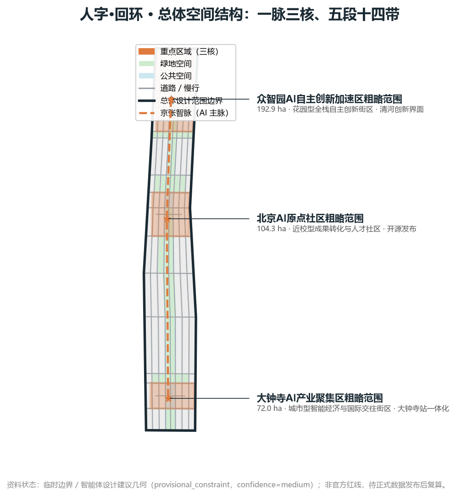
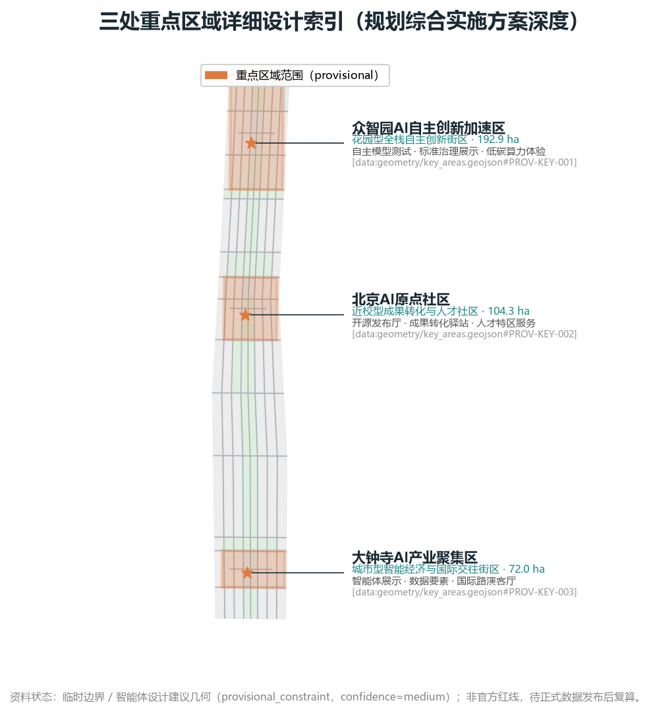
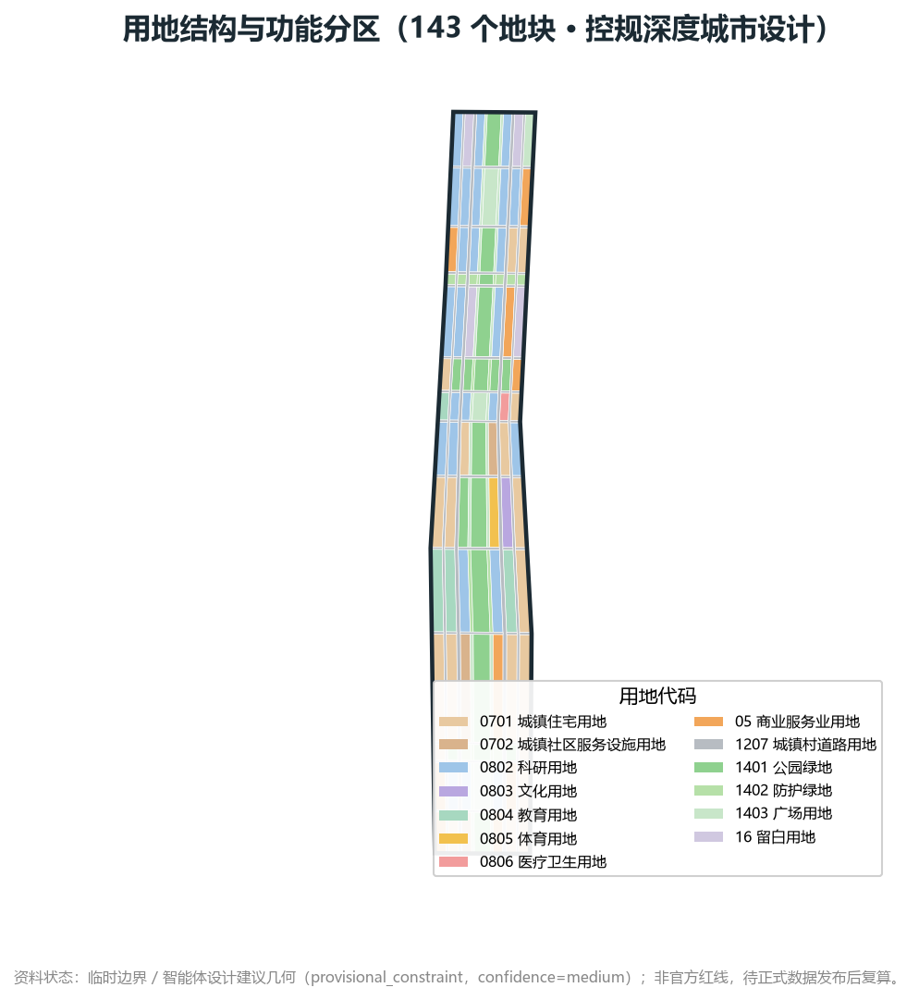
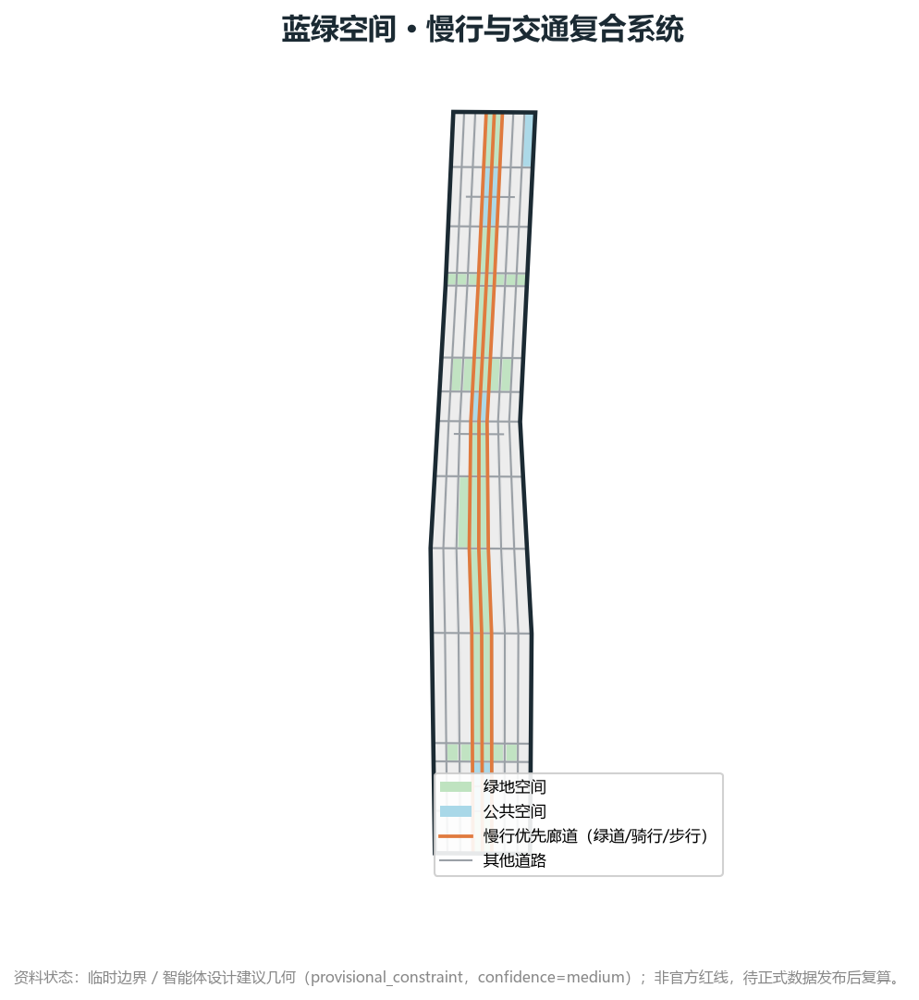
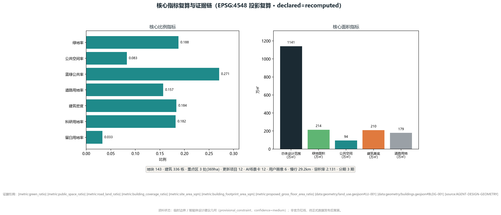

总览地图核心证据
资料状态：临时边界 / 智能体设计建议几何（provisional_constraint，confidence=medium）；非官方红线，待正式数据发布后复算。

11,412,825
㎡ 总体设计范围
43.61
km² 统筹研究范围
18.78%
绿地率
8.28%
公共空间率
3
处重点区域
三层范围
43.61 km²
统筹研究范围 · 43.6 km² · 关注 AI 产业生态与未来城市形态
11.41 km²
总体设计范围 · 11.4 km² · 控规深度城市设计
369.3 ha
重点区域范围 · 369 ha · 三处详细设计
重点区域

| 片区 | 定位 | 空间动作 | AI 场景 |
|---|---|---|---|
| 众智园 AI 自主创新加速区 | 花园型全栈自主创新街区 | 清河界面、产业展示、低碳创新交往 | 自主模型测试、标准治理展示、低碳算力体验 |
| 北京 AI 原点社区 | 近校型成果转化与人才社区 | 校区-园区-街区慢行缝合；成果发布与开源协作 | 开源发布厅、近校孵化、人才特区服务 |
| 大钟寺 AI 产业聚集区 | 城市型智能经济与国际交往街区 | 大钟寺站一体化、四象限步行连通 | 智能体展示、数据要素会客厅、国际路演 |
用地分区

143
地块数
18.18%
科研用地率
3.28%
留白用地率
336
建筑栋数
2.131
容积率
交通慢行

85.2 km
道路中心线总长
29.2 km
慢行优先廊道
15.67%
道路用地率
23
道路条数
3 期
分期实施
蓝绿公共空间
以京张遗址公园活力带为骨架，统筹清河、小月河、周边高校、企业、社区出行需求，提出南北贯通、东西连通的步道、骑行道和绿色空间体系。
214 ha
绿地面积
94 ha
公共空间面积
27.06%
蓝绿公共率
建筑
336
建筑栋数
210 ha
建筑基底面积
18.36%
建筑密度
24.32 km²
建筑总面积
2.131
容积率
建筑方案区分保留、改造、更新、新建或待确认对象；若缺少现状建筑、权属、控规和工程条件，方案只提出方法与待校准清单，不编造拆改留结论。
更新项目
共 12 项更新项目，覆盖公共空间、产业服务、新基建、运营与城市更新。
| 编号 | 名称 | 类型 | 证据引用 |
|---|---|---|---|
| JZ-01 | 京张遗址公园慢行断点缝合 | 公共空间/交通 | [data:geometry/roads.geojson#ROAD-001] |
| JZ-02 | 众智园清河创新界面 | 蓝绿/产业展示 | [data:geometry/green_space.geojson#GREEN-001] |
| JZ-03 | 北京AI原点社区近校成果转化街 | 城市更新/产业服务 | [data:geometry/buildings.geojson#BLDG-001] |
| JZ-04 | 大钟寺站四象限步行连通 | 轨道一体化/慢行 | [data:geometry/public_space.geojson#PUBLIC-001] |
| JZ-05 | AI公共服务与端侧算力节点 | 新基建/公共服务 | [data:geometry/constraints.geojson#CONSTRAINTS] |
| JZ-06 | 全球AI活动周公共路线 | 运营/品牌 | [data:geometry/phasing.geojson#PHASE-001] |
| JZ-07 | 清河低碳创新廊 | 蓝绿/低碳 | [data:geometry/green_space.geojson#GREEN-001] |
| JZ-08 | 开源发布厅与近校孵化街 | 城市更新/创新 | [data:geometry/buildings.geojson#BLDG-001] |
| JZ-09 | 国际路演客厅与数据要素会客厅 | 运营/国际交往 | [data:geometry/public_space.geojson#PUBLIC-001] |
| JZ-10 | AI慢行导航与无障碍感知 | 新基建/慢行 | [data:geometry/roads.geojson#ROAD-001] |
| JZ-11 | AI朝圣地标与贡献墙 | 运营/文化 | [data:geometry/phasing.geojson#PHASE-001] |
| JZ-12 | AI生活服务样板街 | 城市更新/生活服务 | [data:geometry/land_use.geojson#LU-001] |
AI 场景
共 12 张 AI 场景卡 + 6 类用户画像。所有场景须说明服务对象、空间位置、隐私边界、人工复核与运营主体。
场景卡
| 编号·名称 | 空间载体 | 设计说明 |
|---|---|---|
| 01 开源发布厅 | 北京AI原点社区 | 成果发布、代码贡献展示、小型路演 |
| 02 安全治理沙盒 | 众智园 | 标准制定、安全评测、模型红队测试转译为可参观协作节点 |
| 03 端侧算力驿站 | 总体设计范围节点 | 与公共服务、企业服务、低碳能源结合的端侧算力原型 |
| 04 AI慢行导航 | 京张遗址公园活力带 | 可解释导视、低侵入传感识别慢行断点与无障碍需求 |
| 05 大钟寺国际路演客厅 | 大钟寺AI产业聚集区 | 智能体、智能终端、内容消费企业的国际路演与媒体发布 |
| 06 清河低碳创新廊 | 众智园临清河界面 | 绿色空间、雨洪、步行骑行与AI展示结合的园区公共客厅 |
| 07 近校成果转化街 | 北京AI原点社区 | 面向高校成果转化的孵化、展示、法务与投融资服务 |
| 08 数据要素会客厅 | 大钟寺片区 | 合规、授权、可审计的数据要素与数字资产流通界面 |
| 09 AI生活服务样板街 | 社区与商业交汇处 | 医疗、教育、法律、生活服务等AI+场景的可运营街区 |
| 10 全球AI活动周路线 | 一带公共空间系统 | 从遗址文化、开源社区、产业展示到国际路演的可步行体验路线 |
| 11 AI朝圣地标·贡献墙 | 三处重点区域 | 面向社区贡献者与开源协作的可视荣誉与署名系统 |
| 12 端侧AI公共安全节点 | 公共空间与蓝绿廊道 | 低侵入传感、活动安全评估与人工复核的辅助节点 |
用户画像
| 画像 | 典型需求 | 空间响应 | 自检边界 |
|---|---|---|---|
| 开源开发者 | 发布、协作、测试、社区声誉 | 原点社区开源发布厅、夜间协作空间 | 不采集个人行为轨迹；活动数据只做聚合统计 |
| 初创团队 | 低成本办公、算力入口、产品试验场 | 众智园共享测试场、端侧算力服务点 | 算力和数据服务需另行授权 |
| 头部企业访客 | 展示、商务、国际接待、人才招聘 | 大钟寺国际路演客厅、轨道站点接驳 | 企业标识和案例须清权 |
| 周边居民 | 通勤、休闲、社区服务、低扰动更新 | 京张遗址公园慢行环、社区服务嵌入 | 不将居民画像用于商业推荐 |
| 高校师生 | 成果转化、跨校协作、日常慢行 | 校区-园区慢行缝合、AI教育体验点 | 校园数据和科研成果需授权 |
| 国际人才 | 短期访学、跨境协作、国际路演、文化交流 | 大钟寺国际路演客厅、国际客厅、双语导视与无障碍服务 | 需外事合规；不采集国籍敏感标签，仅做聚合统计 |
核心指标

| 指标 | 数值 | 单位 | 复算来源 |
|---|---|---|---|
| site_area_sqm | 11,412,825.386 | ㎡ | [data:geometry/site_boundary.geojson#SITE-001] |
| green_ratio | 0.187782 | 比例 | [data:geometry/green_space.geojson#GREEN-001] |
| public_space_ratio | 0.082786 | 比例 | [data:geometry/public_space.geojson#PUBLIC-001] |
| blue_green_public_ratio | 0.270568 | 比例 | 绿地 + 公共空间 / 设计范围 |
| road_land_ratio | 0.156699 | 比例 | [data:geometry/roads.geojson#ROAD-001] |
| building_coverage_ratio | 0.183578 | 比例 | [data:geometry/buildings.geojson#BLDG-001] |
| proposed_gross_floor_area_ratio | 2.1312 | ㎡/㎡ | [data:geometry/buildings.geojson#BLDG-001] |
| slow_mobility_length_m | 29,162.3 | m | [data:geometry/roads.geojson#ROAD-001] |
任务覆盖
本方案对公告 1.3、1.4、1.5 与 agent.1–agent.6 全部必选任务进行覆盖：
1.3.1 城市设计国际方案征集依据
1.3.2 三层范围工作框架
1.3.3 重点区域与拆改留
1.4.1 统筹研究范围产业研究
1.4.2 总体设计范围城市更新
1.4.3 重点区域详细设计
1.5.1.1 AI 创新生态
1.5.1.2 人才画像与 AI+ 场景
1.5.2.x 更新项目与分期
1.5.3.x 三处重点区
agent.1 命名/Logo
agent.2 5–8 案例
agent.3 ≥10 场景卡
agent.4 ≥3 验证场景
agent.5 ≥5 画像
agent.6 ≥3 朝圣地标
自检状态
| 检查 | 状态 | 说明 |
|---|---|---|
| SCAFFOLD-DRAFT 标记 | 已移除 | proposal.md 不含 SCAFFOLD-DRAFT |
| 证据引用覆盖 | 通过 | 8 来源 + 6 标准 + 15 深度 + 26 指标 + 9 图层 |
| 空间复算 | 通过 | declared area == recomputed area |
| 视觉静态 | 通过 | offline · local-only · 5 嵌入图 |
| 任务覆盖 | 通过 | 公告 1.3/1.4/1.5 + agent.1–agent.6 |
| 专业标准响应 | 通过 | MOHURD、MNR 等 6 项标准 |
来源
| source_id | source_type | usability | 用途 |
|---|---|---|---|
OFFICIAL-ANNOUNCEMENT | official_public | formal_ready | 《百年京张AI创新带城市设计国际方案征集资格预审公告》。提供项目目的（1.3）、三层范围与设计任务（1.4、1.5）、重点区域清单与成果深度要求，是本方案的第一 |
AGENT-TASKBOOK | user_provided_cleared | formal_ready | 面向智能体的开源征集任务书。给出 agent.1-agent.6 任务、场景卡与人才画像数量下限、命名与品牌要求、运营机制要求以及“不得冒充官方审定结论”的边界 |
SITE-PACKAGE | official_public | formal_ready | 机器可读资料包：design_brief.json、allowed_design_space.json、ranges/planning_limits.json、 |
SOURCE-REGISTRY | repository_public_registry | formal_ready | 公开、清权与临时资料的可用性登记表，区分 formal-ready、background-only、provisional-only 与 needs-revie |
PROCESSED-FACT-PACK | repository_processed_reference | navigation_only | 阅读导航层，配合 project_scope_summary.csv、agent_task_requirements.csv、source_use_matrix |
BOUNDARY-SOURCE | agent_inferred_from_public_data | provisional_only | PROV-SITE-001（总体设计范围 11412825.386 ㎡）与 PROV-RESEARCH-001（统筹研究范围 43609232.558 ㎡）临时 |
KEY-AREA-SOURCE | agent_inferred_from_public_data | provisional_only | PROV-KEY-001/002/003 三处重点区域临时范围（192.92 / 104.32 / 72.05 公顷），作为本包 key_areas.geojs |
AGENT-DESIGN-GEOMETRY | agent_generated_design | design_proposal_only | 本 agent 生成的设计成果几何：143 个用地地块、336 个建筑基底、23 条道路中心线、34 处绿地、24 处公共空间、3 个分期范围、4 条约束提示带 |
假设
| id | severity | 说明 |
|---|---|---|
A-CONTROLS-001 | blocking_for_statutory_use | 详细控规指标、道路红线、建筑退线、限高、权属、市政管线与工程条件均未在公开资料包中发布，本方案不掌握任何审定管控条件。 |
A-BOUNDARY-001 | blocking_for_statutory_use | 官方 SITE_BOUNDARY 与三处 KEY_AREA 红线尚未发布，本包使用 brief/site-package/geometry/provisional_boundaries.geojson 的临时粗略边界，标注 official |
A-LANDUSE-001 | major | 用地分类按《国土空间调查、规划、用途管制用地用海分类指南》代码体系表达，但现状用地、权属与已批控规无法获取，143 个地块为在临时边界内构造的无缝无叠拓扑分区，属设计建议而非现状调查。 |
A-BUILDING-001 | major | buildings.geojson 的 336 个基底为按地块 34% 覆盖率生成的示意体量，层数按功能分区赋值（研发 8-12 层、居住 6-18 层、公共服务 3-5 层），层高按 4.0m/3.2m 估算，无现状建筑测绘、结构、年代与 |
A-ROAD-001 | major | roads.geojson 的 23 条中心线与 land_use 中 1207 城镇村道路用地为方案建议的路网骨架与微循环，未采用任何官方道路红线、断面、交叉口渠化或轨道工程线位。 |
A-PHASING-001 | major | 三期分期范围按“先锚点、后连接、再织补”的实施逻辑划定，未取得资金、实施主体、征拆、审批时序与年度计划信息；更新项目清单 12 项为设计建议项目库。 |
A-CONSTRAINT-001 | major | constraints.geojson 的 4 条约束（京张铁路遗址文化保护提示带、清河与小月河水系提示带、轨道站点影响提示区）为基于公开信息推断的分析辅助线，source_type=agent_inferred_from_public_d |
A-SCENARIO-001 | minor | 12 张 AI 场景卡与 6 类人才画像基于公开产业信息与公告任务推演，未开展入户调查、企业访谈或运营数据分析；场景涉及的数据采集均按数据最小化、聚合统计、可解释与人工复核原则设定边界。 |
A-COPYRIGHT-001 | minor | 本包全部图纸、图表、HTML 与几何数据均由本 agent 使用 matplotlib、shapely、pyproj 等开源工具生成，未引用受版权保护的第三方图像、字体、企业标识、卫星影像或地图瓦片。 |